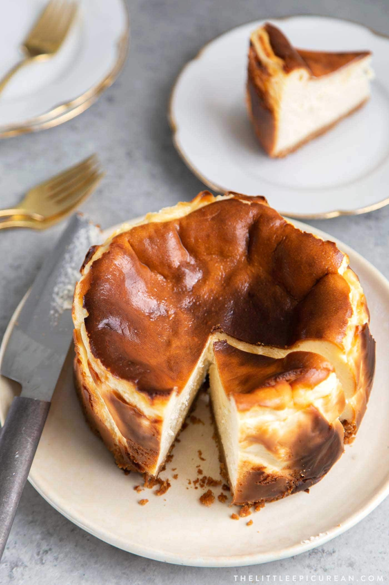

Basque Cheesecake

Description
Now, this is not your typical cheesecake.
It has only five ingredients, comes together in a food processor, and emerges from the oven jiggly and blackened.
It is one of the best things you will ever taste.
Ingredients
- 1 1/2 cups sugar
- 10 large egg yolks
- 4 1/2 cups cream cheese, preferably Philadelphia brand, at room temperature
- 1 1/2 teaspoons kosher salt
- 1 1/2 cups creme fraiche
Method
- Preheat your oven to 475 degrees.
- Spray a 9” springform cake pan with non-stick spray, and fully line the bottom with parchment paper.
- Using a food processor, cream the sugar, egg yolks, cream cheese, and salt until smooth.
- Add the creme fraiche and mix until the batter is fully incorporated.
- Pour the batter into the prepared pan and bake for 22-24 minutes or until the top is caramelized, but the middle is still very loose and jiggly.
When you move the cheesecake, it should have a wave effect.
- Let the cheesecake come to room temperature on a cooling rack and then refrigerate uncovered overnight.
- Bring to almost room temperature and serve in slices.